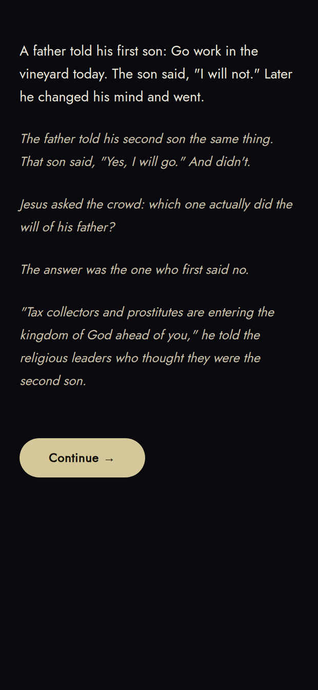
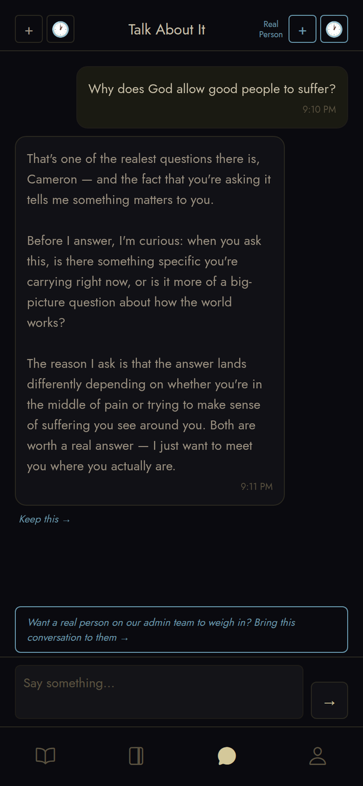

Milk Before Meat
A quiet place to breathe, and to be seen.
“Come unto me, all ye that labour and are heavy laden,
and I will give you rest.”
Matthew 11:28
Come and see.
A quiet place to breathe, and to be seen.
What this is
No login. No account. No form asking your religion before you’re even welcome.
Most apps are built to take from you — your attention, your hours, your peace. Milk Before Meat was built to do the opposite: to give something back. It opens not with a survey, but with a single quiet image and one true line. Then it tells you a short, beautiful story from the life of Jesus — the kind of moment where someone desperate was noticed, welcomed, and called by name — and asks you one honest question about your own life.
Whatever you answer, it listens. It never argues. It never pressures. It never tries to make you feel you haven’t measured up. It simply pays attention to you, the way the people who minister best have always done — one person, one story, one honest moment at a time.



What you’ll find inside
If at any point you’d rather talk to a human being than an app, you can, from any screen. It’s never buried and never gated behind a wall of questions. That promise is at the center of the whole thing.
An honest word about what this is.
This app was made by a Latter-day Saint — a member of The Church of Jesus Christ of Latter-day Saints — who simply believes Jesus is good, and wanted to build something that shares that goodness gently instead of pushily. It will never hide what it is from you. It will never pressure you, shame you, or rush you. It begins with the things every Christian shares — that God is good, and that you are seen — and it only ever goes deeper if and when you ask. As the app itself says about itself: it’s a lantern, not the Light. Take what you feel there to God, and to the people who love you.
Come and see
However you come — certain, searching, hurting, or just curious — there’s a place for you, and there’s no wrong way to begin.
Ask me about it any time, and I’ll show you how to try it.
Made with love, and meant for you.